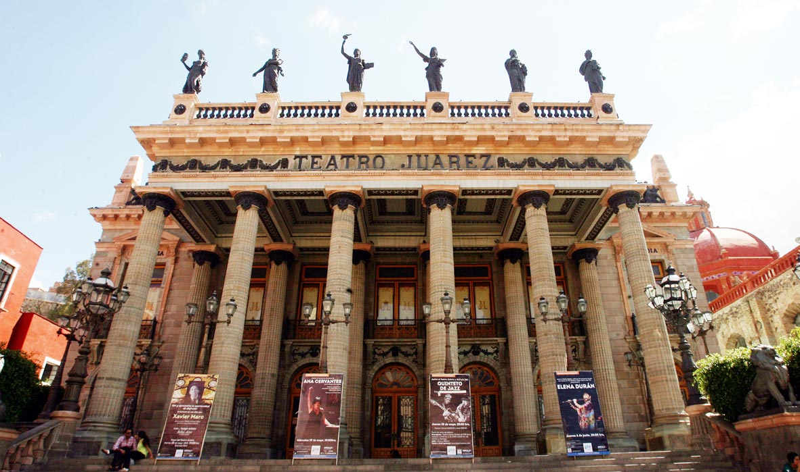
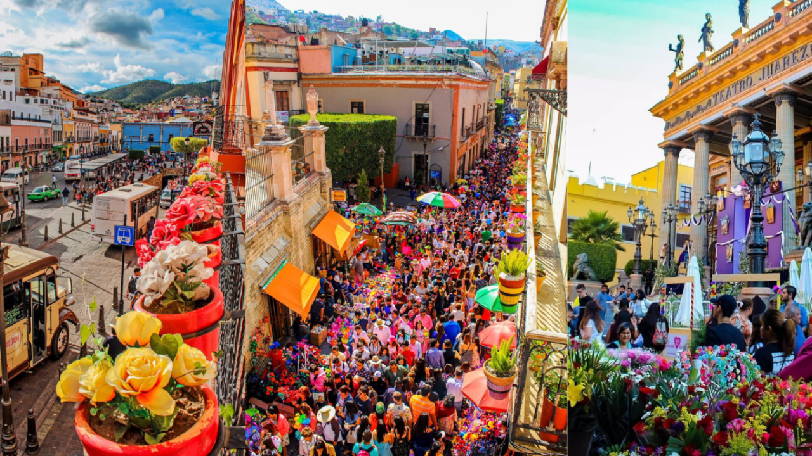
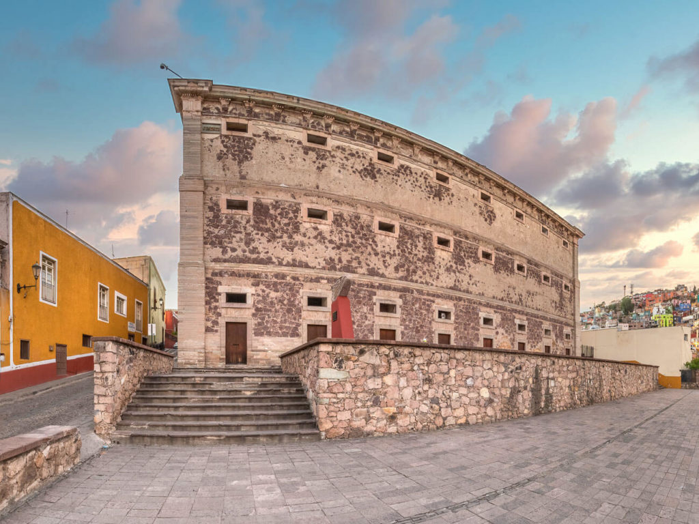
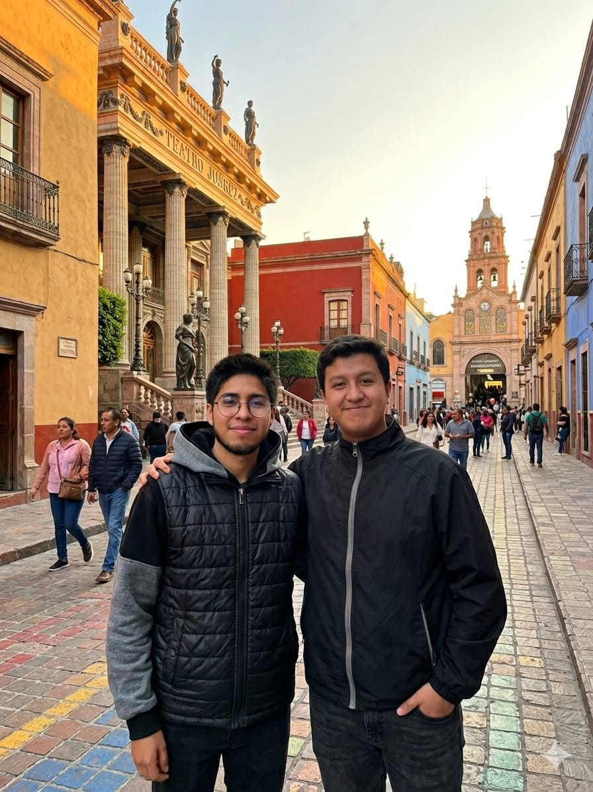
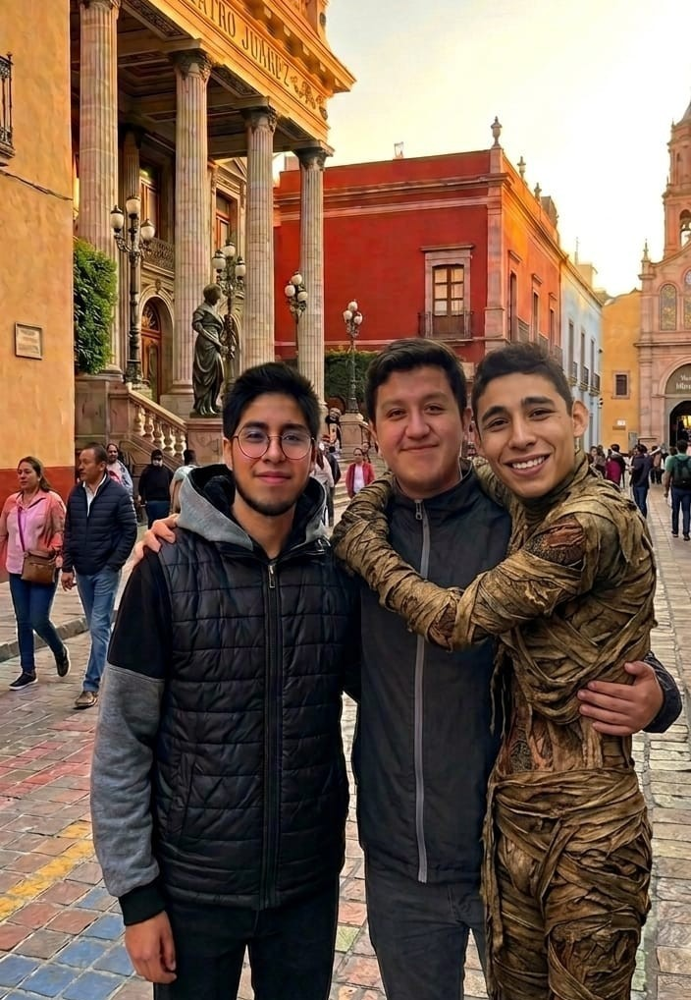

La historia del estado de Guanajuato está muy relacionada con la minería, ya que desde la época colonial fue uno de los lugares más importantes para la extracción de plata en México. Durante el virreinato, las minas de ciudades como Guanajuato hicieron que la región fuera una de las más ricas y valiosas para la Corona española. Gracias a esto, se construyeron edificios, templos y calles que hoy forman parte de su patrimonio histórico.
Uno de los hechos más importantes en la historia del estado fue su participación en el inicio de la Independencia de México en 1810. En la ciudad de Dolores, el cura Miguel Hidalgo dio el famoso “Grito de Dolores”, que marcó el comienzo de la lucha por la independencia. Poco después, ocurrió la toma de la Alhóndiga de Granaditas en la ciudad de Guanajuato, un evento clave en esta etapa histórica.
Con el paso del tiempo, Guanajuato se convirtió en un estado con gran desarrollo agrícola, industrial y cultural. Sus ciudades crecieron gracias al comercio, la minería y posteriormente la industria moderna, convirtiéndose en una de las regiones más importantes del país.
Hoy en día, Guanajuato es reconocido no solo por su historia, sino también por su riqueza cultural, sus tradiciones y su importancia económica dentro de México.
Datos Generales
Capital
Guanajuato es una ciudad colonial XVI y reconocida por sus tuneles subterraneos, callejones y edificios historicos.
Población
El estado de Guanajuato tiene alrededor de 6 millones de habitantes, siendo uno de los estados mas poblados del pais. Sus ciudades mas importantes son Leon, Irapuato y Celaya.
Idioma
El idioma oficial y mas hablado es el español.Tambien existen comunidades indigenas que hablan otomi y chichimeca jonaz.
Clima
Guanajuato tiene un clima mayormente templado y semiseco. La temperatura promedio suele estar entre 18 °C y 22 °C. En invierno algunas zonas pueden ser frías, mientras que en verano hay más lluvias.
Lugares Turísticos
Callejón del Beso: El Callejón del Beso es uno de los rincones más famosos y románticos de Guanajuato capital. Se trata de un callejón extremadamente estrecho donde los balcones de dos casas opuestas están tan cerca (a unos 70 cm) que las personas pueden besarse desde ellos.
Teatro Juárez: El Teatro Juárez es uno de los teatros más importantes y famosos de México. Se encuentra en el centro de Guanajuato, frente al Jardín Unión. Fue construido entre 1873 y 1903 y destaca por su estilo neoclásico, sus grandes columnas y sus leones de bronce en la entrada. Actualmente es un lugar muy importante para la cultura, ya que ahí se realizan obras de teatro, conciertos y eventos como el Festival Internacional Cervantino.
Museo de las Momias: El Museo de las Momias de Guanajuato es uno de los lugares más famosos de Guanajuato. En este museo se exhiben momias reales que se conservaron de forma natural debido al clima y las condiciones del suelo. Actualmente es una importante atracción turística e histórica de México.
Alhóndiga de Granaditas: La Alhóndiga de Granaditas es un edificio histórico muy importante de Guanajuato. Fue construida como almacén de granos y se hizo famosa por la batalla de la Independencia de México en 1810. Actualmente funciona como museo y conserva objetos históricos y culturales.
San Miguel de Allende: San Miguel de Allende es una de las ciudades más famosas de Guanajuato por su arquitectura colonial, sus calles empedradas y su ambiente turístico. Es considerada Patrimonio de la Humanidad y destaca por la Parroquia de San Miguel Arcángel y sus actividades culturales y artísticas.
Dolores Hidalgo: Dolores Hidalgo es conocido como la cuna de la Independencia de México, porque ahí el cura Miguel Hidalgo dio el Grito de Independencia en 1810. La ciudad destaca por su importancia histórica, su cerámica y sus tradicionales nieves de muchos sabores.
León: León es una de las ciudades más grandes e importantes de Guanajuato. Es reconocida por su industria del calzado y del cuero, por lo que también es llamada la “Capital Mundial del Calzado”. Además, destaca por su comercio, cultura y eventos como la Feria de León.
Mineral de Pozos: Mineral de Pozos es un antiguo pueblo minero de Guanajuato conocido por sus ruinas, minas y ambiente tranquilo. Actualmente es un Pueblo Mágico y destaca por su historia, arte y arquitectura antigua.
Universidad de Guanajuato: La Universidad de Guanajuato es una de las universidades más importantes del estado. Destaca por su gran escalinata y su edificio histórico en el centro de Guanajuato. Ofrece distintas carreras y es reconocida por su cultura y nivel académico.
Guanajuato recibe millones de turistas cada año debido a su arquitectura colonial, sus museos y sus festivales culturales.
Cultura y Tradiciones
Los festivales de Guanajuato son muy importantes por su cultura y tradición. El más famoso es el Festival Internacional Cervantino, considerado uno de los eventos culturales más grandes de América Latina. En este festival se presentan conciertos, obras de teatro, danza y exposiciones con artistas de muchos países.
Otro festival importante es la Feria de León, que incluye juegos mecánicos, conciertos, exposiciones y comida típica. También destacan las celebraciones de independencia en Dolores Hidalgo y las festividades religiosas y callejoneadas tradicionales en Guanajuato capital.
Las callejoneadas son una de las tradiciones más famosas de Guanajuato. Consisten en recorridos nocturnos por los callejones de la ciudad acompañados por estudiantinas, grupos musicales que cantan y cuentan leyendas e historias de Guanajuato. Durante el recorrido las personas cantan, bailan y disfrutan del ambiente cultural y turístico de la ciudad.
En Guanajuato se celebran muchas festividades tradicionales y culturales durante el año. Entre las más importantes están el Día de Muertos, las fiestas patrias en Dolores Hidalgo y las celebraciones religiosas en diferentes ciudades del estado. También destacan las callejoneadas y el Festival Internacional Cervantino, donde hay música, danza, teatro y actividades artísticas que atraen a muchos turistas.
Gastronomía
Enchiladas mineras: Las Enchiladas mineras son tortillas rellenas de queso o pollo, bañadas en salsa de chile y acompañadas con papa y zanahoria. Se llaman así porque eran comunes entre los mineros.
Guacamayas: Las Guacamayas son bolillos rellenos de chicharrón duro con salsa picante, muy populares en León.
Cajeta de Celaya: La Cajeta de Celaya es un dulce hecho principalmente con leche de cabra y azúcar. Es uno de los productos más famosos del estado.
Charamuscas: Las Charamuscas son dulces de piloncillo y azúcar que muchas veces tienen forma de momias o figuras divertidas.
Tamales: Los Tamales son masa de maíz rellena de carne, salsa o dulce, envuelta en hojas de maíz y cocida al vapor.
Fiambre: El Fiambre es una ensalada fría preparada con diferentes carnes, verduras y vinagre, típica en celebraciones y fiestas.
La gastronomía de Guanajuato mezcla ingredientes tradicionales mexicanos y recetas coloniales.
Economía
Guanajuato es uno de los estados más importantes industrialmente en México.
Destaca en:
Industria automotriz: Guanajuato es uno de los estados con mayor crecimiento automotriz del país. Cuenta con plantas ensambladoras y fábricas de autopartes que generan miles de empleos y exportan vehículos a otros países.
Fabricación de calzado: La León es reconocida por su gran producción de zapatos, bolsas, cinturones y productos de piel. Por esta razón se le conoce como la “Capital Mundial del Calzado”.
Agricultura: En Guanajuato se cultivan productos como maíz, trigo, cebolla, brócoli y fresa. La agricultura es una actividad importante para la economía y el abastecimiento de alimentos.
Turismo: El turismo es muy importante gracias a ciudades históricas como San Miguel de Allende y Guanajuato capital, además de sus museos, festivales y tradiciones culturales que atraen visitantes nacionales e internacionales.
Minería: La minería fue una de las actividades más importantes en la historia de Guanajuato. En la época colonial destacó por la extracción de plata y oro, lo que ayudó al crecimiento económico y cultural del estado.
La ciudad de León es reconocida mundialmente por la fabricación de zapatos y productos de piel.
Municipios Importantes
León
Es la ciudad más grande del estado y uno de los centros industriales más importantes de México. Su economía está basada principalmente en la industria del calzado y la piel, lo que la ha convertido en un referente nacional e internacional en este sector. También tiene un fuerte desarrollo en comercio, servicios, industria automotriz y tecnología. Además, es famosa por la Feria de León, un evento que impulsa la economía y el turismo.
Celaya
Es un municipio estratégico del Bajío con gran importancia agrícola e industrial. En el campo destaca la producción de cultivos como maíz, trigo y cebolla, mientras que en la ciudad se ha desarrollado la industria y la logística. Es muy reconocida por la cajeta, un dulce tradicional que forma parte de su identidad cultural. Su ubicación la convierte en un punto clave para el transporte y el comercio en la región.
Irapuato
Es conocida como la “Capital Mundial de la Fresa” debido a su gran producción agrícola, especialmente de fresas, que se exportan a diferentes partes del mundo. Además de la agricultura, cuenta con agroindustrias que procesan y distribuyen alimentos. Es una ciudad en crecimiento con importancia tanto económica como urbana dentro del estado..
San Miguel de Allende
Es una ciudad reconocida internacionalmente por su valor cultural y arquitectónico. Fue declarada Patrimonio de la Humanidad por la UNESCO gracias a su centro histórico colonial muy bien conservado. Su economía depende principalmente del turismo, el arte y los servicios, ya que recibe visitantes de todo el mundo. También es un lugar muy atractivo para artistas y extranjeros que viven ahí.
Galería de Imágenes
Callejón del Beso
El Callejón del Beso es uno de los lugares más famosos de Guanajuato.
Cuenta la leyenda que dos enamorados podían besarse desde balcones muy cercanos.
Actualmente es uno de los sitios turísticos más visitados del estado.

Teatro Juárez
El Teatro Juárez es considerado uno de los teatros más hermosos de México.
Su arquitectura combina estilos neoclásicos y art nouveau.
Es una de las sedes principales del Festival Internacional Cervantino.

Cultura de Guanajuato
La cultura de Guanajuato destaca por sus tradiciones, callejoneadas,
música, danza y festivales internacionales como el Cervantino.

Alhóndiga de Granaditas
La Alhóndiga de Granaditas fue escenario importante de la Independencia de México.
Actualmente funciona como museo histórico.
Maravillas de Guanajuato
Equipo


Conclusión
En conclusión, Guanajuato es un estado muy importante de México por su gran variedad de actividades económicas, culturales y turísticas. Cada municipio aporta algo diferente que lo hace único y valioso.
León destaca por su industria del calzado y su crecimiento económico. Celaya combina agricultura e industria y es conocida por su cajeta. Irapuato es famosa por la producción de fresas. Y San Miguel de Allende sobresale por su turismo y su riqueza cultural.
En general, Guanajuato es un estado con mucha historia, tradición y desarrollo.
Como recomendación, es muy buena idea visitar Guanajuato porque puedes conocer ciudades con mucha cultura, comida típica y lugares muy bonitos que representan lo mejor de México.